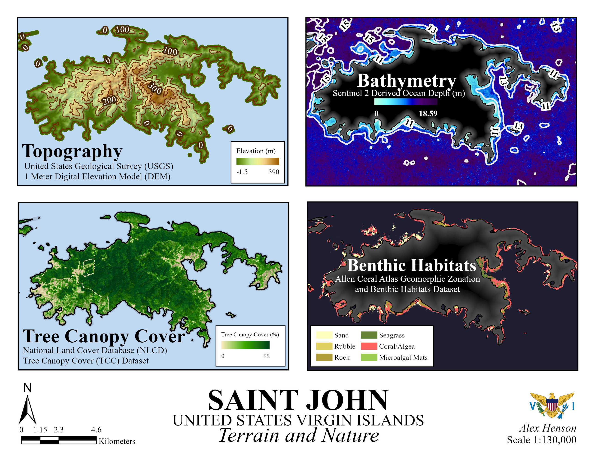

Saint John: Terrain and Nature
St. John, U.S. Virgin Islands

St. John is small enough to see whole, so I mapped it four ways at the same scale: elevation, ocean depth, tree canopy, and seafloor habitat. Every panel shares one extent, so you can read across them. Elevation comes from the USGS 1-meter DEM, depth from Sentinel-2 satellite-derived bathymetry, canopy from the NLCD Tree Canopy Cover dataset, and habitat from the Allen Coral Atlas. I built the layout in ArcGIS Pro, drew contours from the elevation and depth rasters, and masked the land on the two ocean panels so the water stays in focus. Notice how the forest thins on the west end around Cruz Bay, the island's main town, while the steep central ridge stays almost fully covered. Offshore, coral and algae line the south and east coasts.
- Data
-
- USGS 1 m Digital Elevation Model
- Sentinel-2 derived bathymetry
- NLCD Tree Canopy Cover
- Allen Coral Atlas benthic habitats
- Made with
- ArcGIS Pro
- Scale
- 1:130,000
- Made
- Fall 2026
- Full size
- Open image (2576 × 1991 px)